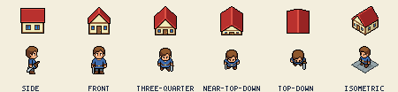

1Qué es
Una hoja de sprites normal no dice de qué tamaño son los frames, qué animación hay en cada fila ni a qué ritmo va. Eso suele ir en un fichero aparte que se pierde, o en metadatos que borran las redes y los mensajeros y que una IA no ve cuando mira la imagen.
Un sprite pattern lleva lo imprescindible dibujado en la propia imagen, como un patrón de costura:
- los frames, en una rejilla pura desde
(0, 0), con una animación por fila; - a la derecha de cada fila, su rótulo: el nombre de la animación, cuántos frames tiene, cuánto dura cada uno, cómo se reproduce y, si en esa fila cambia, hacia dónde mira;
- debajo, las zonas con título:
SHEET(cómo se corta),SUBJECT(qué es) y, si el autor quiere,AGENTS(qué debe hacer una IA al usarla en una aplicación y al ampliarla); - y una barra final con el formato y su versión y, debajo, el enlace a esta especificación.
Cada dato lleva su etiqueta delante, separada por dos puntos (FRAMES: 6), y sale una sola vez. Así lo entiende quien no conoce el formato, sea una persona
o una IA que solo mira la imagen; y un programa lo lee de forma exacta, porque el texto va en una rejilla de
caracteres fija.
2Un vistazo

3La zona de frames
Un sprite pattern DEBE ser un PNG con transparencia. La zona de frames
DEBE empezar en (0, 0) y medir columnas·fw por
filas·fh, sin margen ni separación. Dentro NO DEBE haber nada más que los
frames: ni texto ni marcas.
- Todos los frames miden lo mismo,
fw × fh. El frame de la filary la columnacestá enx = c·fw,y = r·fh. - Una fila, una animación (o un grupo de imágenes sueltas). Sus frames van seguidos desde la izquierda, en orden; las celdas que sobran a la derecha quedan transparentes.
- Una línea de tinta de 1 px bordea la zona por fuera (la columna
x = columnas·fwy la filay = filas·fh), con una marca de 3 px en cada borde entre filas y entre columnas. - La hoja PUEDE ampliarse a escala entera sin suavizado y sigue siendo válida. NO DEBE guardarse en JPEG ni otro formato con pérdida.
- Nombre recomendado:
<nombre>.spritevpg.png. - Los frames mandan sobre el texto. El tamaño de celda y la posición de los frames NO DEBEN cambiar para hacer sitio a los márgenes: el rótulo de cada fila se compacta y la imagen se ensancha para que quede a la altura de su animación (5.1).
- Hojas pequeñas. Con frames de 16 px o menos, los márgenes ocupan más que los dibujos. Es normal: la letra no encoge. Junto a la hoja a tamaño nativo (la que usa el juego) se DEBERÍA publicar una copia ampliada a escala entera (×4 u ×8), que es también un sprite pattern válido y es la que conviene enseñar o dar a una IA.
3.1Elegir el tamaño de celda
La hoja tiene un único tamaño de celda, el mismo en todas las filas: así cualquier motor la corta con una rejilla. Ese tamaño lo marca la animación que más se sale, no el dibujo quieto.
- Si una animación necesita más sitio (un ataque que alarga la espada, un salto), se agrandan todas las celdas, no solo las de su fila. Un personaje que quieto ocupa 16 px suele ir en celdas de 24 o de 32.
- El cuerpo va en el mismo sitio de la celda en todas las filas: si no, daría un salto al cambiar
de animación. Ese sitio lo dicen
BODYyPIVOT(5.2). - No tiene que ir centrado. Si el ataque solo se sale por la derecha, las celdas se ensanchan por la derecha y el cuerpo se queda a la izquierda en todas: las demás animaciones solo tienen más transparente a ese lado.
- El espacio vacío no cuesta: lo transparente casi no pesa en un PNG. Lo que no se debe hacer nunca es encoger o deformar los frames que se salen para meterlos en la celda: el personaje cambiaría de tamaño al animarse.
Cuando una sola animación es desproporcionada (un ataque tres veces más ancho que el personaje), agrandar todas las celdas deja de compensar. Entonces:
- Sacar el efecto aparte. El personaje hace el gesto en su celda normal, y el arco del espadazo,
el proyectil o la explosión van en otro sprite pattern, de tipo
EFFECT, que el juego dibuja encima. Se indica enAGENTS:IMPLEMENT: EN ATTACK, DIBUJAR ENCIMA EL EFECTO SLASH DESDE EL TERCER FRAME. - O dar a esa animación su propia hoja, con su tamaño de celda y el
PIVOTsobre el mismo punto del personaje (los pies), para que encaje con las demás al cambiar de una a otra.
4El texto
4.1La rejilla de caracteres
Toda la imagen se divide en celdas de texto de 5×8 px con origen en (0, 0). Todo
carácter DEBE caer exactamente en una celda. El ancho de la imagen es múltiplo de 5 y el alto,
múltiplo de 8.
Dentro de la celda, la fila 0 es para la tilde, las filas 1 a 6 y las columnas 0 a 3 para el glifo de 4×6, y la fila 7 y la columna 4 quedan libres. Un carácter va en tinta sobre papel o, en las barras de título, en negativo (papel sobre tinta, con la celda entera rellena). Así el texto se lee sin ambigüedad: se mira cada celda y se compara con la tabla de la fuente.
4.2La fuente: SpriteVPG 4×6
SpriteVPG 4×6: mayúsculas, cifras, vocales con tilde, Ü, Ñ y los signos
. , : ; - + / ( ) [ ] = # < > * % _ " ' ! ? ¿ ¡ & ·, sin suavizado. El texto se escribe siempre en
mayúsculas.
Las mayúsculas no se recuperan. Quien lee un sprite pattern obtiene el nombre, la descripción y
las indicaciones en mayúsculas, y con ? en lugar de los caracteres que la fuente no tiene. Por eso los
nombres de fila solo usan minúsculas (se leen de vuelta en minúsculas) y un programa NO DEBERÍA
depender de las mayúsculas y minúsculas del resto. Quien genera la hoja puede guardar aparte sus datos originales; eso
queda fuera del formato.
ABCDEFGHIJKLMNÑOPQRSTUVWXYZ ÁÉÍÓÚÜ 0123456789 .,:;-+/()[]=#<>*%_"'!?¿¡&·
En la TTF, a 8 px por em (o múltiplos: 16, 24, 32…) un píxel de la fuente es un píxel de pantalla. Licencia SIL Open Font License 1.1. La tabla de glifos, píxel a píxel, está en spritevpg.py.
4.3Colores
| Uso | Color |
|---|---|
| Papel (fondo de los márgenes) | #F3EEDD |
| Tinta (texto, borde y barras) | #1F2A44 |
| Muescas del punto de apoyo | #D6336C |
| Regla entre los rótulos de fila | #9AA3B5 |
Papel y tinta DEBEN ser exactamente esos colores: con ellos se lee el texto. Los frames pueden usar cualquiera.
5La información
Todo dato se escribe como ETIQUETA: valor, con dos puntos entre la etiqueta y el
valor. Un texto que no cabe sigue en la línea de abajo, sangrado: una línea que empieza con espacio continúa la
anterior.
5.1El rótulo de cada fila: cómo se anima
A la derecha de la zona de frames (desde la primera columna de texto tras columnas·fw + 6 px), junto a
cada fila, va su rótulo: el nombre de la animación y, sangrados debajo, sus datos.
| Línea | Significado |
|---|---|
| Nombre | El de la animación: letras, cifras, _ y -. Se recomiendan idle, walk, run, jump, attack, hurt, death… |
FRAMES | Cuántos frames tiene, desde la izquierda de la fila |
MS/FRAME | Milisegundos que dura cada frame. Un número: todos igual. Varios: uno por frame, en orden |
PLAY | LOOP (en bucle), ONCE (una vez; se queda en el último frame) o STILL (no es una animación: son imágenes sueltas, y no lleva MS/FRAME) |
FACING | Opcional (1.1). Hacia dónde mira el dibujo en esta fila, cuando no es lo que dice SUBJECT: los mismos valores que allí (5.3) |
MIRROR | Opcional (1.1). La dirección para la que sirve esta fila volteada en horizontal (MIRROR: LEFT), o NONE si esta fila no se voltea aunque la hoja diga que sí |
Varias direcciones en una hoja
Un personaje que se ve de frente, de lado y de espaldas lleva una fila por dirección dibujada. SUBJECT
dice la dirección y el volteo de la hoja en general, y cada fila escribe los suyos solo cuando cambian:
Los tres rótulos de una hoja con FACING: DOWN en SUBJECT, puestos aquí uno
al lado de otro; en la hoja van uno debajo de otro, cada uno junto a su fila.
- Una fila sin
FACINGmira hacia donde diceSUBJECTy hereda suMIRROR. - Una fila con
FACINGpropio no hereda elMIRRORde la hoja: o escribe el suyo, o no se voltea. MIRRORes siempre la dirección contraria en horizontal de la que se dibuja:RIGHT↔LEFT,DOWN-RIGHT↔DOWN-LEFT,UP-RIGHT↔UP-LEFT. ConUPyDOWNno tiene sentido.- Quien use la hoja y necesite una dirección que no está dibujada la busca en los
MIRROR: dibuja esa fila volteada en horizontal alrededor delPIVOT(o del centro del frame si no hay). Una dirección que no está ni dibujada ni en unMIRRORno existe en la hoja.
Dónde va cada rótulo. El alto de la fila manda: cada rótulo va a la altura de su animación, y lo que cede es el ancho de la imagen, que el formato no fija. Quien escribe la hoja DEBE aplicar estas reglas:
- Hay un rótulo por fila, en el orden de las filas, con una regla gris entre uno y otro. Quien
lee se guía solo por ese orden: el rótulo número
res el de la filar. - En el alto de una fila caben
alto del frame / 8líneas de texto (redondeando hacia abajo, y al menos una). El rótulo DEBE ocupar esas líneas como mucho. - Si caben todos los datos con uno por línea, van así. Si no, van seguidos, separados por
·, en las líneas que haya:IDLE · FRAMES: 2 · MS/FRAME: 600 400 · PLAY: LOOP · FACING: DOWN. - Antes que bajar un rótulo, se ensancha la imagen: las líneas pueden medir hasta 72 caracteres. Se usa el ancho menor con el que el rótulo cabe en su fila (desde 26 caracteres).
- El rótulo va centrado en su fila, en la línea de texto más cercana (las líneas van cada 8 px y las filas no suelen medir un múltiplo de 8).
- Solo cuando no hay otra salida (frames de menos de 8 px de alto, o un rótulo que no cabe ni con líneas de 72 caracteres) el rótulo ocupa más que su fila: entonces empieza justo debajo del anterior, sin pisarlo, y los siguientes bajan con él. Una línea que pase de 72 caracteres se parte por un espacio y sigue en la de abajo, sangrada.
- Los frames no se mueven nunca.
Ancho. La imagen es tan ancha como pidan los frames, el rótulo más largo y el enlace de la barra final. Lo único que conviene limitar es el nombre de la fila: DEBERÍA tener 24 caracteres como mucho.
Debajo de la zona de frames van las zonas: SHEET y SUBJECT, una al lado
de la otra, y AGENTS, a todo el ancho. Cada una empieza con una
barra de título en negativo con su nombre (desde la segunda celda de la barra) y sigue con sus líneas,
con los valores alineados. Un lector las localiza por su barra, no por su posición.
5.2SHEET: cómo se corta
| Etiqueta | Valor |
|---|---|
NAME | El nombre de la hoja. Obligatoria |
FRAME | anchoXalto PX: el tamaño de cada frame. Obligatoria |
GRID | n COLUMNS X m ROWS: columnas y filas de la zona de frames. Obligatoria |
ORIGIN | Siempre TOP-LEFT 0,0, NO GAPS: los frames empiezan arriba a la izquierda, sin margen ni separación. Es una constante del formato; se escribe para quien no lo conoce |
BODY | anchoXalto PX AT x,y: lo que ocupa el cuerpo quieto dentro de cada frame, y dónde empieza (su esquina de arriba a la izquierda, en píxeles del frame). Opcional |
PIVOT | x,y: el punto del frame por el que se coloca el dibujo en el juego, el mismo en todos los frames. En personajes, entre los pies. Opcional |
Celda y cuerpo no son lo mismo. La celda da cabida a la animación que más se sale
(3.1), así que suele ser mayor que el dibujo quieto. BODY dice dónde está
ese cuerpo dentro de la celda y cuánto mide, y PIVOT, por qué punto se coloca: quien use la hoja pone el
PIVOT en la posición del personaje y usa BODY (no la celda) para lo que ocupa en el juego.
Qué entra en BODY. El cuerpo es lo que ocupa sitio en el juego: la figura en reposo
sin lo que sobresale de ella (un arma, una lanza, una capa, un efecto). Es la caja que sirve para
colisionar, seleccionar y medir proporciones; el dibujo puede salirse de ella. Se toma del primer frame de la
fila idle o, si no hay ninguna con ese nombre, del primer frame de la primera fila. Medir
todos los píxeles de ese frame (lo que hace "auto" en la herramienta) da el cuerpo solo cuando la figura
no lleva nada que sobresalga: si lleva una lanza, BODY DEBERÍA darse a mano.
Cuando la hoja lleva PIVOT, una muesca de color #D6336C lo marca en el borde
de la zona de frames: a la derecha de cada fila, a su altura, y debajo de cada columna.
5.3SUBJECT: qué es
Dice a quien importa la hoja qué tiene delante, y a quien la amplía, cómo tiene que dibujar lo nuevo. La zona y cada etiqueta son opcionales, pero DEBERÍAN ponerse siempre que se sepan.
| Etiqueta | Valor |
|---|---|
KIND | CHARACTER (personaje), CREATURE (criatura), ITEM (objeto que se coge o se usa), PROP (decorado), BUILDING (construcción), EFFECT (efecto), TILE (casilla) o UI (interfaz) |
VIEW | Una de las seis vistas de la sección 6: SIDE, FRONT, THREE-QUARTER, NEAR-TOP-DOWN, TOP-DOWN o ISOMETRIC |
FACING | Hacia dónde mira el dibujo: RIGHT, LEFT, UP, DOWN, DOWN-RIGHT, DOWN-LEFT, UP-RIGHT o UP-LEFT |
MIRROR | Opcional (1.1). La dirección para la que sirve el dibujo volteado en horizontal: con FACING: RIGHT, MIRROR: LEFT dice que para mirar a la izquierda basta voltearlo. Vale para todas las filas que no digan otra cosa (5.1). Si falta, la hoja no dice que se pueda voltear |
DESC | Una frase breve, en el idioma de quien la escribe |
5.4AGENTS: indicaciones para una IA
Las indicaciones del autor para la IA que trabaje con esta hoja. Son propias de cada hoja, no instrucciones generales del formato (esas están en esta especificación). La zona es opcional, y el texto, libre, en el idioma de quien lo escribe. Cada indicación lleva delante cuándo se aplica:
| Etiqueta | Cuándo | Qué conviene poner |
|---|---|---|
IMPLEMENT | Al usar la hoja en un juego o una aplicación: lo que tiene que programar quien la integra | Lo que debe hacer el código y que no está dibujado: los efectos que añade la aplicación (una sombra, un brillo, un parpadeo al recibir daño, partículas), en qué frame pasa algo (el golpe, un paso), con qué se encadena una animación |
EXTEND | Al ampliar la hoja con una IA: otra animación, otra dirección, otro objeto del conjunto | El estilo (contorno, tonos por color, dirección de la luz), las proporciones y el tamaño del dibujo dentro del frame, y lo que no debe cambiar (qué lleva en cada mano, qué se ve siempre) |
NOTE | Siempre | Cualquier otra cosa que deba saber |
- Una indicación por línea; si no cabe, sigue en la de abajo, sangrada.
- No hace falta repetir lo que ya dicen las otras zonas: la vista, hacia dónde mira y si se voltea para el otro
lado están en
SUBJECTy en los rótulos (FACING,MIRROR); el tamaño de frame, enSHEET; el ritmo, en el rótulo de cada fila. - Los frames se cuentan desde 1 cuando se nombran en un texto: «el frame 3» es el tercero de su fila (la columna 2 al recortar). Mejor aún, escribirlo sin ambigüedad: «el tercer frame».
- Una IA que use o amplíe la hoja DEBERÍA seguir estas indicaciones; si no puede cumplir alguna (un efecto que su motor no tiene), DEBERÍA decirlo en vez de ignorarla.
5.5La barra final
Las dos últimas filas de texto de la imagen, en negativo y a todo el ancho: en la primera, SPRITEVPG y
la versión; en la segunda, el enlace a esta especificación. Identifican el formato, dicen dónde leer los detalles y
sirven para calcular la escala de una copia ampliada.
6Las vistas
El valor de VIEW es una de estas seis. Forman parte del formato para que todo el mundo llame igual a
cada una y, sobre todo, para que quien amplíe la hoja (otra animación, otro objeto del mismo conjunto) sepa qué
vista tiene que forzar.

| Valor | Vista | Qué se ve | Para qué juegos |
|---|---|---|---|
SIDE | Lateral | De lado, a la altura de los ojos. No se ve la parte de arriba | Plataformas, lucha |
FRONT | Frontal | De frente, a la altura de los ojos. No se ve la parte de arriba | Iconos, inventario, retratos |
THREE-QUARTER | 3/4 cenital | Desde arriba a unos 45°: se ven el techo y la fachada, y el techo ocupa un tercio del alto | RPG clásicos de 16 bits |
NEAR-TOP-DOWN | Cenital oblicua | Casi desde encima: el techo ocupa casi todo y la fachada es una franja fina abajo | Gestión y colonias |
TOP-DOWN | Cenital | Desde arriba del todo: solo techos, copas y cabezas | Estrategia, mapas |
ISOMETRIC | Isométrica | En diagonal desde una esquina, proyección 2:1: la parte de arriba es un rombo y se ven dos caras laterales | Construcción, tácticas |
Para forzar la vista al generar con IA
Estas frases, en inglés, son las que mejor siguen los modelos de imagen. Se añaden al prompt tal cual, junto con «Use exactly this same camera angle in every frame»:
| Vista | Frase |
|---|---|
SIDE | side view: seen straight from the side at eye level, the top is not visible |
FRONT | front view: seen straight from the front at eye level, the top is not visible |
THREE-QUARTER | three-quarter top-down view (3/4 overhead, like a classic 16-bit RPG): seen from above at about 45 degrees, showing the top and the front face, with the top taking about a third of the height |
NEAR-TOP-DOWN | near top-down view (like a colony management game): seen from almost directly above, mostly the top is visible plus a thin strip of the front face at the bottom |
TOP-DOWN | top-down view: seen from directly above, only roofs, tree crowns and tops are visible; walls, trunks and front faces are not visible at all |
ISOMETRIC | isometric view: 2:1 pixel art isometric projection, the top is a diamond and two side faces are visible |
Con personajes, añadir hacia dónde mira (FACING): «facing right», «facing down-right»…
7Leer un sprite pattern
Mirando la imagen (una persona, o una IA sin herramientas): SHEET dice cómo cortar,
SUBJECT qué es, el rótulo de cada fila, cómo se anima, y AGENTS, qué programar al usarla y
qué respetar al ampliarla. Mejor con una copia ampliada (×4): a tamaño
original la letra mide 6 px de alto.
Con un programa, de forma exacta:
- Escala. Para
k = 1, 2, 3…: si el ancho es múltiplo de5ky el alto de8k, leer las dos últimas filas de celdas. Si son una barra en negativo y la primera empieza porSPRITEVPG, esa es la escala. - Texto. Leer todas las celdas, comparándolas con la tabla de la fuente y anotando cuáles van en negativo.
- Zonas. Cada tramo en negativo cuyo texto es
SHEET,SUBJECToAGENTSes una barra de título. El contenido de la zona son las líneas de debajo, a su ancho, hasta la siguiente barra; las que empiezan con espacio continúan la anterior. En cada línea, la etiqueta va antes de los dos puntos. - Rótulos. El texto a la derecha de la zona de frames, por encima de las barras, de arriba
abajo, uniendo las líneas sangradas a la anterior: el rótulo número
res el de la filar. - Frames. Con
FRAMEyGRID: recortar(0, 0, columnas·fw, filas·fh)(reduciendo antes a escala nativa con vecino más próximo sik > 1). Esa es la hoja limpia.
8La herramienta
El formato es la imagen: no hay ningún fichero más. Para generar y leer sprite patterns hay una herramienta de referencia, spritevpg.py (Python 3; solo necesita Pillow):
python3 spritevpg.py make hoja.png datos.json -o nombre.spritevpg.png --preview 4
python3 spritevpg.py read nombre.spritevpg.png -o salida/ --gifs
python3 spritevpg.py info nombre.spritevpg.png
python3 spritevpg.py validate nombre.spritevpg.pngPara generar, se le da la hoja limpia (los frames en rejilla desde 0,0, una animación
por fila) y los datos que hay que escribir, en un JSON pequeño:
{
"name": "Caballero azul",
"kind": "character", "view": "side", "facing": "right", "mirror": "left",
"description": "Caballero con armadura azul, espada y escudo",
"agents": {
"implement": ["Añadir una sombra elíptica bajo los pies."],
"extend": ["Contorno oscuro de 1 px, tres tonos de azul, luz arriba a la izquierda."]
},
"frame": { "w": 32, "h": 32 },
"body": { "x": 5, "y": 0, "w": 21, "h": 32 },
"pivot": { "x": 15, "y": 31 },
"rows": [
{ "name": "idle", "ms": 400, "loop": "loop" },
{ "name": "walk", "ms": 110, "loop": "loop" },
{ "name": "attack", "ms": [80, 120, 90, 160], "loop": "once" }
]
}Una entrada de rows por fila, en orden. ms: un número (todos los frames igual) o una lista
(uno por frame); sin ms, la fila son imágenes sueltas. Una fila puede llevar su "facing" y su
"mirror" ({ "name": "walk_side", "ms": 110, "loop": "loop", "facing": "right", "mirror": "left" }). body y pivot admiten "auto": la herramienta mide el primer frame de la fila
idle (o de la primera) y pone el apoyo en el centro de su base; si la figura lleva algo que sobresale,
mejor darlos a mano (5.2). agents: las indicaciones de la zona
AGENTS, en listas implement, extend y note. El número de frames lo cuenta la herramienta. Ese
JSON es solo la manera de pasarle los datos: no forma parte del formato ni acompaña a la imagen.
Para leer, read deja la hoja sin márgenes, una carpeta de frames por fila, con
--gifs un GIF por animación, y los datos leídos de la imagen en ese mismo JSON, por si se quieren
cambiar y volver a generar.
9Importar en un motor
| Motor | Cómo |
|---|---|
| Unity | Sprite Editor → Slice → Grid By Cell Size: fw × fh, Offset 0, Padding 0. Las celdas de los márgenes se descartan. |
| Godot 4 | SpriteFrames → Añadir frames desde hoja: tamaño de frame, sin offset ni separación; elegir los frames de cada fila. |
| Tiled | Tileset: casilla fw × fh, Margin 0, Spacing 0. |
| Aseprite | Importar hoja de sprites: tamaño de frame. |
| Código propio | Fila r, columna c: x = c·fw, y = r·fh. |
O recortar antes con spritevpg.py read (sección 8).
10Versiones y lo que queda fuera
| Versión | Qué añade |
|---|---|
| 1.0 | El formato: frames desde 0,0, rótulos de fila, SHEET, SUBJECT, AGENTS y la barra final |
| 1.1 | FACING y MIRROR en el rótulo de cada fila, y MIRROR en SUBJECT: varias direcciones en una hoja y qué filas se voltean (5.1). Además, aclaraciones que no cambian el formato: dónde va cada rótulo (siempre a la altura de su fila, ensanchando la imagen si hace falta), qué entra en BODY, las mayúsculas, las hojas pequeñas y cómo se cuentan los frames |
Compatibilidad. Una versión menor solo añade datos opcionales. Un lector 1.0 lee una hoja 1.1 ignorando lo que no conoce (los frames, el corte y el ritmo son los mismos), y un lector 1.1 lee una hoja 1.0 tal cual. La barra final dice la versión con la que se escribió la hoja.
Quedan para versiones posteriores, como datos o zonas opcionales: los eventos por frame (un paso,
el golpe), las variantes y la paleta (qué colores son intercambiables), las cajas de colisión y de golpe, los puntos
de enganche y los estados de objetos y construcciones. Mientras tanto, lo que haga falta se cuenta en
AGENTS.
11Recursos
| Recurso | Fichero |
|---|---|
| Figura de las seis vistas | views.png |
| Sprite pattern de ejemplo (nativo y ×4) | caballero.spritevpg.png · @4x |
| Su hoja limpia y los datos con los que se generó | caballero.sheet.png · caballero.card.json |
| Fuente | spritevpg-4x6.ttf (licencia) |
| Skill de IA | spritevpg.zip · SKILL.md |
| Herramienta (generar, leer, validar) | spritevpg.py |